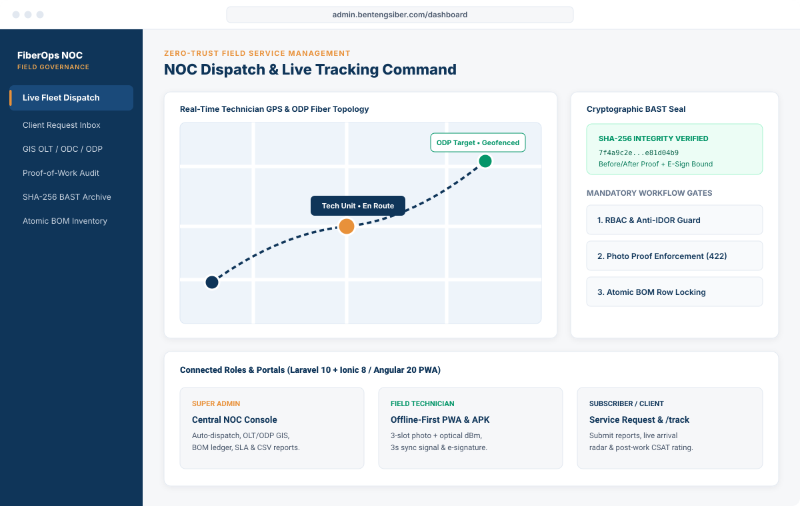
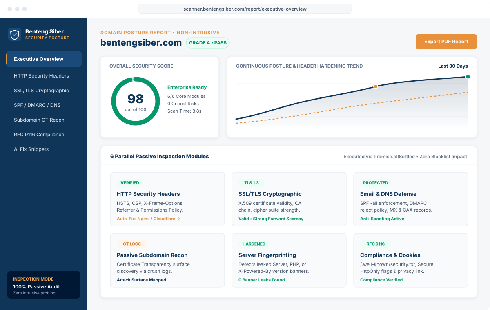
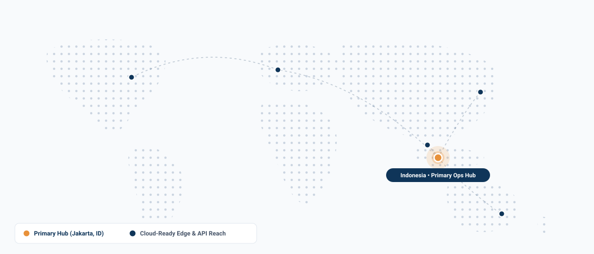
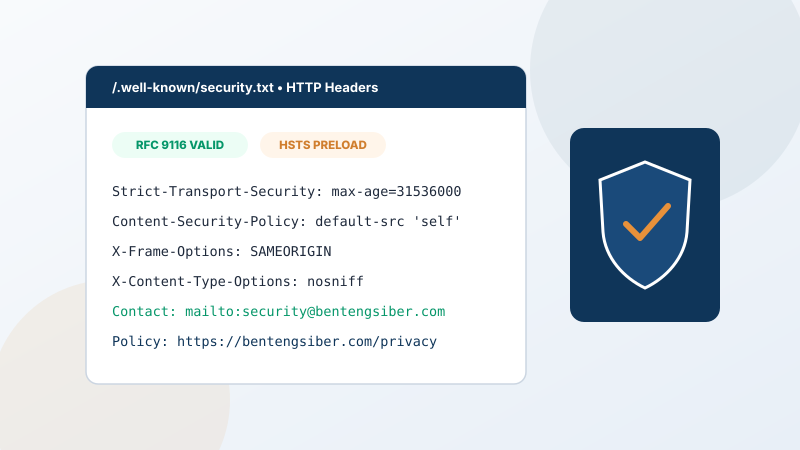
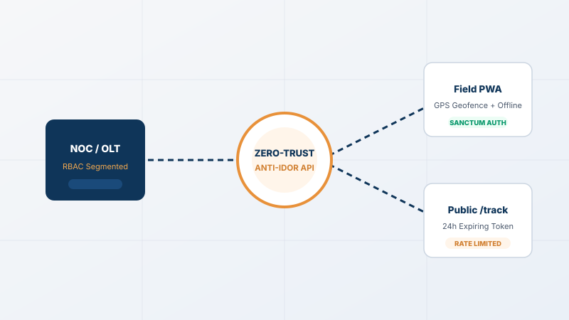
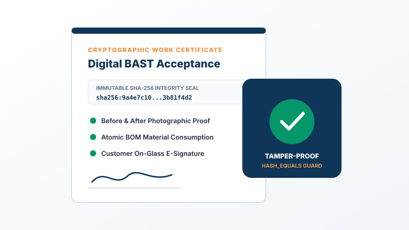

Multi-Tenant NOC, GIS & MikroTik/OLT
Auto-dispatch nearest techs, manage GIS OLT/ODC/ODP ports, sync MikroTik PPPoE secrets (Provision/ISOLIR/Restore), and enforce live OLT/GenieACS optical dBm gates.
Carrier-grade Multi-Tenant ISP Field Service Management & Network Orchestrator—uniting live NOC dispatch, MikroTik PPPoE auto-unblock on Dynamic QRIS payment, OLT/GenieACS optical telemetry gates, AES-256 encrypted secrets, and SHA-256 certified public BAST certificates.
Internet Service Providers and network enterprises face simultaneous risks across external web perimeters and distributed field work. Unverified technician sign-offs, unlogged fiber attenuation, inconsistent inventory deductions, and weak API authorization open costly operational and security gaps.
Benteng Siber unifies a hardened Super Admin NOC Command Center, an offline-first Field Technician PWA/Android app, and transparent subscriber service tracking—backed by cryptographic proof and strict API security controls.
Engineered as a strict Multi-Tenant Cloud across 5 granular RBAC roles—Super Admin, NOC Dispatcher, Warehouse Admin, Field Supervisor, and Field Technician—plus public subscriber portals.
Auto-dispatch nearest techs, manage GIS OLT/ODC/ODP ports, sync MikroTik PPPoE secrets (Provision/ISOLIR/Restore), and enforce live OLT/GenieACS optical dBm gates.
Offline-first Ionic + Capacitor app with 3-slot optical dBm proofs, live On-Site Dynamic QRIS billing (3s MikroTik auto-unblock), batch GPS sync, and e-signatures.
Row-locked warehouse stock & ODP port allocation, mandatory proof gates, and camera-scannable SHA-256 public BAST verification (/bast/verify) with optical & payment proof.
Subscribers submit outage or installation reports at /request, watch live technician ETA at /track with 24-hour expiring privacy tokens, and rate completed service.
Replace manual paper handovers and fragmented spreadsheets with deterministic work-order state machines, real-time GPS dispatch, and hardened security posture verification.


Every API endpoint and field workflow in Benteng Siber is audited for real-world resilience—preventing unauthorized task access, duplicate transactions, and silent data tampering.
Middleware-prioritized TenantScope blocks cross-tenant Route Model Binding IDOR, while AES-256-CBC encrypts every ISP's MikroTik and Midtrans credentials at rest.
ShouldQueue workers with exponential backoff decouple MikroTik & webhook I/O for <150ms webhook SLAs, while row-level locks protect warehouse BOM and ODP ports.
Every completed job issues a camera-verifiable SHA-256 BAST certificate, while Platform Master governance actions seal into an append-only hash-chained ledger.
Headquartered in Indonesia with cloud-ready API architecture—launch any live production portal directly below or open our evaluation credentials.

Multi-tenant NOC dashboard for 5 RBAC roles, live GPS auto-dispatch, GIS OLT/ODC/ODP nodes, MikroTik/OLT sync, AES-256 secrets, BOM inventory, and BAST review.
Offline-first mobile workspace with instant ?demo=1 mode, 3-slot optical dBm proof, live On-Site Dynamic QRIS (3s MikroTik unblock), BOM picker, and e-signatures.
Submit FTTH installations, fiber outage reports, or relocation requests directly into the Super Admin queue with instant tracking receipts.
Real-time technician ETA lookup using ticket ID and last 4 phone digits, with 24-hour expiring tokens, privacy redaction, and CSAT rating.
Provision an isolated Zero-Trust FiberOps tenant in under 60 seconds on Starter or Growth, or request dedicated Enterprise Carrier onboarding verified by our architects.
Built for growing RT/RW Net and local FTTH operators moving off WhatsApp spreadsheets.
Full hardware network orchestration, automated MikroTik restoration, and OLT optical telemetry gates.
For national NAPs, multi-city ISPs, and carrier deployments requiring custom quotas and compliance.
Instant 14-day trials activate automatically for Starter & Growth with zero credit card required. Enterprise Carrier tiers undergo direct verification to guarantee dedicated infrastructure capacity.

A practical blueprint for deploying HSTS preload, X-Frame-Options, nosniff, and standardized /.well-known/security.txt vulnerability disclosure policies.

How strict Super Admin vs. Technician role scoping, Sanctum tokens, brute-force throttling, and anti-IDOR ownership guards prevent lateral API abuse.

Why binding 3-slot optical dBm photo proofs, row-locked atomic BOM deductions, and immutable SHA-256 hashing stops billing leakage and rework friction.
Direct technical answers covering 5-role multi-tenant RBAC, Dynamic QRIS 3s MikroTik unblock, OLT/GenieACS optical gates, AES-256 secret encryption, and immutable governance logs.
Reach our team directly via phone, WhatsApp, email, or official Instagram Customer Service for deployments, technical support, and enterprise inquiries.
Direct line for rapid deployment inquiries, technical escalation, and customer assistance.
Commercial proposals, FiberOps onboarding, and security architecture consultation.
Technical support, portal evaluation requests, and security disclosure reports.
Official Instagram Customer Service channel for quick questions and updates.
Launch the live Super Admin Console or Field Technician PWA immediately, or submit a direct service request through our portal.